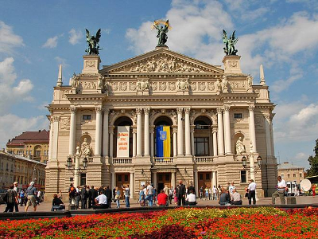
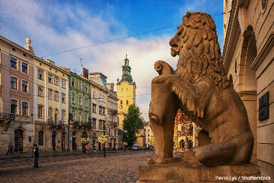
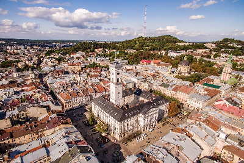
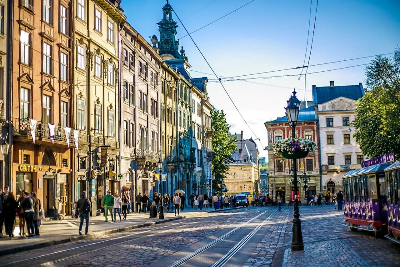
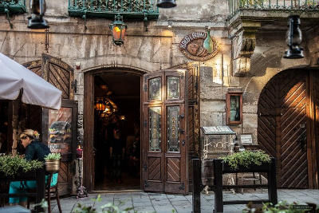
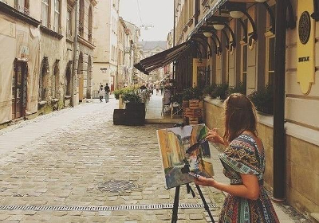
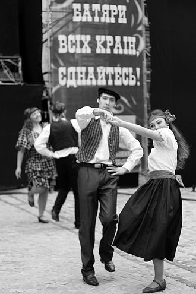

То Є Львів
Привіт, старий, ти кльово виглядаєшЯ гордий, шо давно вже таки добре тебе знаю...
Кузьма Скрябін
Трохи історії
Львів заснував король Данило приблизно у 1231—1235 роках (перша згадка від 1256 року). Близько 1272 року місто стало столицею Королівства Русі (Галицько-Волинського князівства).
Невдовзі після смерті князя Юрія II Львів на понад чотири століття опинився під владою Королівства Польського. 1356 року місто отримало маґдебурзьке право; в добу Середньовіччя Львів був важливим торговельним центром.
За австрійського панування місто стало осередком українського та польського національного рухів.
Після розпаду Австро-Угорщини восени 1918 року Львів деякий час був столицею Західноукраїнської Народної Республіки, але після українсько-польської битви за місто в листопаді 1918 перейшов до Польщі, що в 1922-23 було визнано міжнародними пактами та угодами.
Під час Другої світової війни місто захопив Радянський Союз, а згодом — Німеччина.
Після війни було юридично закріплено ялтинську угоду 1945, за якою Східна Галичина і зокрема Львів лишався у складі Української РСР. 1946 року між Польщею та УРСР відбувся обмін населення, який разом із наслідками війни суттєво вплинув на населення Львова. З 1991 року Львів перебуває у складі України.
Цікаві факти про Львів
Львів невичерпний. Це не просто місто з історією, а місто з душею. Своєю особливою атмосферою, яку відчуває кожен, хто приїжджає сюди бодай на декілька днів. Тут хочеться залишитися, або принаймні повертатися ще не раз.
- Єзуїтський сад – перший і найстаріший парк в Україні. Заснований у XVI столітті, він декілька разів міняв назву, і зараз відомий львів’янам як парк Івана Франка.
- В 1574 році Іван Федоров створив у Львові першу українську друковану книгу – «Апостол». Всього було випущено від 1000 до 1200 друкованих екземплярів «Апостола».
- У Львові був заснований перший в Україні університет 1661 року. На той час Києво-Могилянська академія функціонувала кілька десятків років, але вона не мала статусу університету.
- Насправді пиво варили у Львові з дуже давніх часів. Перше задокументоване згадка про пивоварнях відноситься до 1425 році. Але офіційно перша пивоварня України почала працювати у Львові в 1715 році.
- На початку 1842 був побудований Театр графа Станіслава Скарбека (нині відомий як Театр Марії Заньковецької). На момент відкриття він був третім за величиною театром в Європі з 1460 місцями для глядачів.
- Як і багато інших винаходів в цьому світі, гасова лампа з’явилася випадково. Це сталося в 1853 році у Львівській аптеці під назвою «Під золотою зіркою». У тому ж році Львів став першим містом в Європі, де з’явилися вуличні ліхтарі.
- Львів – місто, яке за час свого існування перебувало у складі 8 держав: Галицько-Волинського князівства, Австро-Угорської імперії, Речі Посполитої, Російської імперії, у складі ЗУНР, СРСР, під нацистським режимом та належить досі Незалежній Україні.
- Перший футбольний матч, коли-небудь зіграний на території України та Польщі, відбувся у Львові в 1894 році. Команда Кракова зіграла проти команди Львова. У той історичний день львівська команда здобула перемогу з рахунком 1:0.
- Навколо площі Ринок знаходиться 44 будинки. З цієї площі більш як сімсот років тому розпочалося будівництво Львова. Право будуватися тут мали тільки аристократи, крім того, в ті часи існував податок на вікна – за можливість мати більше трьох, треба було платити. Це наклало свій відбиток на архітектуру.
- У 1629 році італієць Роберто Бандінеллі започаткував у Львові першу в Україні міську пошту європейського зразка, яка регулярно доставляла листи для мешканців міста з усіх куточків Європи.
- Львів стало другим містом після Києва на теренах України, де запустили електричний трамвай. Перший електричний трамвай у Києві вирушив у 1892 році, а у Львові у 1894 році.
- Перший мазохіст народився у Львові. Таке поняття, як мазохізм, має прямий вихід зі Львова. Саме тут народився, жив і працював відомий всьому світу Леопольд Фон Захер Мазох, відомий своїми «неординарними» вподобаннями та інтересами. Звідки й пішов сам термін «мазохізм».
- Львів фігурує у Світовій Книзі рекордів Гіннеса. Зокрема, у Львові відкрили перший у світі Музей Сала, де зберігається найбільше серце-сало: його товщина – 55 см, висота – 85 см. Також у Львові на щорічному міському Святі Пампуха, яке проходило взимку 2010 року, організатори та учасники свята виклали малюнок із понад сім тисяч пампухів, розмірами 4 м на 10 м. Ця подія теж потрапила до Книги Рекордів Світу.
- Львів щороку приймає найбільшу кількість фестивалів – понад сотню. Більшість з них є традиційними щорічними фестивалями, частина – одиничними, локальними. Найпопулярніші з них – джазові фестивалі, етно-фестивалі, фестивалі вуличного театру та вуличної їжі, свята шоколаду, кави, львівського пампуха тощо. Найбільша кількість львівських фестивалів за 1 місяць – відбувається в січні: «Спалах різдвяної Звізди», «Львівська Коляда», «Свято Пампуха», парад Звіздарів та інші.
- У Львові рівнозначно з водою п’ють каву і пиво. Це є народне дослідження. Та, аби це довести, Львів'яни заснували поки що єдині в Україні Музей Пивоваріння та Кавову Копальню
- Львів – найбільш дощове місто країни. Місцеві мешканці жартують, що дощ у Львові йде з 1256 року (дата першої письмової згадки про Львів).
- У Львові розвинений кластер ІТ. Голівуд замовляє спецефекти для своїх кіно-картин саме у Львові. Такі популярні голлівудські фільми, як «Гаррі Поттер», «Халк», «Спайдермен», отримали своє програмне забезпечення у Львові. Львівські IT-спеціалісти працюють на замовлення голлівудської кіноіндустрії вже 10 рік поспіль.
- Львівські ІТшники розробили додаток Skype для мобільного телефона.
- Цей список може бути нескінченним. Тож краще все побачити власними очима та почути своїми вухами...
Фотогалерея
     І про традиції
Львів — споконвічне місто українсько-польського прикордоння, у якому століттями змішувалися традиції, культури і мови. Так, унаслідок взаємних запозичень, наприкінці XIX століття у міському середовищі сформувалася львівська ґвара — говір, що утворився внаслідок змішання української і польської мов з вкрапленнями німецької та єврейської лексики. На думку деяких дослідників, вона є складовою південнокреського діалекту польської мови[160], інші вважають її одним з варіантів балаку. У другій половині XX століття ґвара вийшла з широкого вжитку, однак багато слів досі побутують серед львів'ян. Останнім часом деякі інституції (Львівська міська рада, часопис «Ї») докладають зусиль для її певного відродження.
Наприкінці XIX — на початку XX століття розповсюдженою у Львові була субкультура батярів — авантюристів і гульвіс, які з часом набули кумедних рис. Вона стала причиною формування міського фольклору, який іще називають батярським. Львівський міський фольклор ув основному складає батярські пісні (найвідоміша — неофіційний гімн міста «Тільку ві Львові») і легенди (видані в численних збірниках; найвідоміші серед них — «Легенди Львова» Юрія Винничука і «Легенди старого Львова» Ілька Лемка). З 2000-х років для відродження батярських традицій у Львові щорічно, 1 травня, проводять День батяра.
Особливим є святкування Різдва у Львові, під час якого в місті відбувається різдвяний ярмарок, встановлюється шопка та дідух, відбуваються народні гуляння, виступи вертепів та парад звіздарів, фестиваль «Велика коляда» і Свято пампуха.